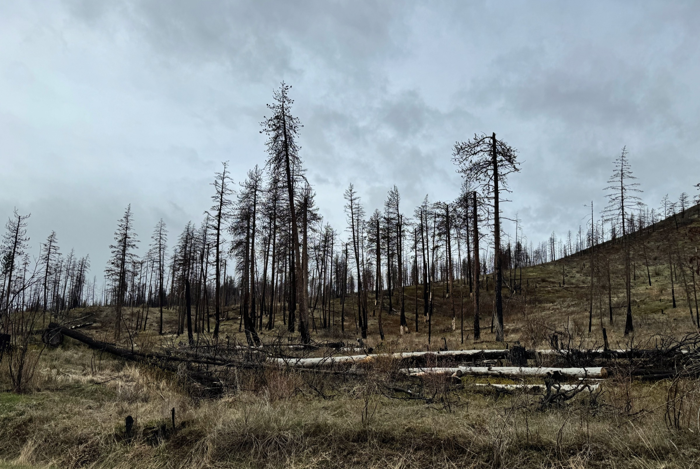

Doctoral research
Charred Chronicles People’s perceived experiences of landscape, attachment, and recovery in post-wildfire geographies.

- Degree
- PhD, Environmental Design
University of Calgary, 2025 - Case
- Lytton Creek Fire,
British Columbia, 2021 - Approach
- Interpretive phenomenology
- Methods
- Walking audio sessions, photo elicitation
In an era of pronounced climate change impacts, the 2021 Lytton Creek Fire offers a stark example of the profound emotional and cultural consequences accompanying physical destruction. This study investigates place attachment — the emotional and cognitive bonds people form with their environments — to comprehend the disruption of cultural identity and land connection. Central to this is exploring the ‘memoryscape’, or how communities remember and emotionally engage with their environment post-disaster.
The research employs an interpretive phenomenological approach, enriched by hermeneutic insights, focusing on the lived experiences of the Lytton community. Innovative methods like walking audio sessions and photo elicitation are used to delve into the community’s memoryscape, enabling real-time articulation of memories and feelings in the altered landscape. These approaches offer a more nuanced understanding of the changes in place attachment following the disaster.
The findings underscore the necessity of addressing both physical and emotional traumas in adaptation and recovery efforts, advocating for strategies that are culturally sensitive and emotionally resonant. This study contributes to climate change discourse by highlighting the critical role of memoryscapes in shaping community recovery and adaptation planning after environmental disasters.